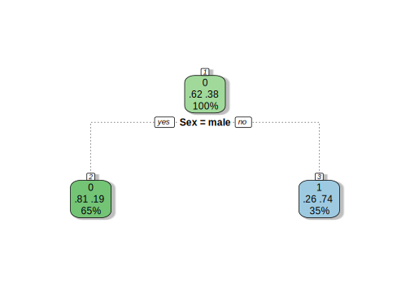
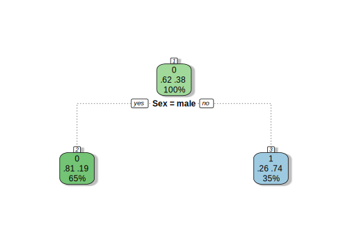

8.2 The Simplest Decision Tree for Titanic
In the Titanic problem, Let’s quickly review the possible attributes. Previously, we have understood that there are a few attributes that have a little prediction power or we say they have a little association with the dependent variable Survivded. These attributes include PassengerID, Name, and Ticket. That is why we re-engineered some of them like the passenger’s name has been re-engineered into the Title, etc. Other attributes can all be used to predict a passenger’s death or survival since they all have some power of prediction. So, which one to use and in what order? We will use the Titanic problem to demonstrate how to build decision trees for prediction.
Let us consider a simple decision tree firstly.
The simplest decision tree perhaps is the one that only has one test condition and two possible outcomes. In terms of a tree, we called it one internal node and two branches. There is only one attribute that meets the requirements. That is Sex, so our decision tree will be built only base on the passenger’s gender.
We need a number of libraries to make our code works.
#load rpart the library which support decision tree
library(rpart)
# Build our first model only use Sex attribute, check help on rpart,
# This model only takes Sex as predictor and Survived as the consequencer.
# load our re-engineered data set and separate train and test datasets
RE_data <- read.csv("./data/RE_data.csv", header = TRUE)
train <- RE_data[1:891, ]
test <- RE_data[892:1309, ]
#build a decision tree model use rpart.
#set seed to make random reproducible
set.seed(1234) #decision tree model has many random selections
model1 <- rpart(Survived ~ Sex, data = train, method="class")Simple! and quick. There are only three lines of code. you can see we have the first two lines to build two variables ‘train’ and ‘test’ to hold our training dataset and testing dataset. The model is simply a function invocation, the function is called ‘rpart’.
R function did the job for us so we do not need to go through the model construction phase manually to build our classifier. The decision tree has been already built. Now we can use our model to make predictions on the test dataset.
For the Kaggle competition, participants can produce predictions on the test dataset provided and make submissions to the Kaggle competition website. Kaggle will award a score based on the prediction’s accuracy on the test dataset.
In practice, people would not build a prediction model and use it to produce a prediction on the test dataset blandly to finish the job. We want to know how our model is performing before using it to do predictions on the test dataset. One way to get to know about the model’s performance is to make a prediction on the training dataset or part of it. So we can compare the model’s prediction with the original value.
#library caret is a comprehensive library support all sorts of model analysis
library(caret)
options(digits=4)
# assess the model's accuracy with train dataset by make a prediction on the train data.
Predict_model1_train <- predict(model1, train, type = "class")
#build a confusion matrix to make comparison
conMat <- confusionMatrix(as.factor(Predict_model1_train), as.factor(train$Survived))
#show confusion matrix
conMat$table## Reference
## Prediction 0 1
## 0 468 109
## 1 81 233#show percentage of same values - accuracy
predict_train_accuracy <- conMat$overall["Accuracy"]
predict_train_accuracy## Accuracy
## 0.7868A brief assessment shows our model1’s accuracy is 78.68%. It is not bad! Let us use this model to make a prediction on test dataset.
# The firs prediction produced by the first decision tree which only used one predictor Sex
Prediction1 <- predict(model1, test, type = "class")Our prediction is produced. Let us submit to Kaggle for an evaluation. We need to convert our prediction into Kaggle’s required format and save it into a file and name it as “Tree_Model1.CSV”. Here, the importance is knowing the procedure.
# produce a submit with Kaggle required format that is only two attributes: PassengerId and Survived
submit1 <- data.frame(PassengerId = test$PassengerId, Survived = Prediction1)
# Write it into a file "Tree_Model1.CSV"
write.csv(submit1, file = "./data/Tree_Model1.CSV", row.names = FALSE)Once we submit this result to Kaggle. Kaggle will evaluate our results and provide a feedback score. That is a good way to know how good the model performed for unknown data. The Kaggle feedback tells us that we have scored 0.76555. It means our prediction’s accuracy is 76.555%. This accuracy is lower than the accuracy we have assessed with the training dataset, which was 78.68%.
Let us look a bit more into our prediction model’s performance. We check our prediction’s death and survive ratio on the test dataset and compare with the same ratio on the train dataset.
## 0 1
## 266 152## Test survive percentage
## 0 1
## 0.6364 0.3636## Train survive percentage
## 0 1
## 0.6162 0.3838The result shows that among a total of 418 passengers in the test dataset, 266 passengers predicted perished (with survived value 0), which counts as 64%, and 152 passengers predicted to be survived (with survived value 1) and which count as 36%. This is not too far from the radio on the training dataset, which was 62% survived and 38% perished see ??.
We know that our model only had one test condition which is Sex. From the training dataset, we knew that the gender ratio was very similar to this number.
#Install expss
library(expss)
# add Sex back to the submit and form a new data frame called compare
compare <- data.frame(submit1[1], Sex = test$Sex, submit1[2])
# Check train sex and Survived ratios
prop.table(table(train$Sex, train$Survived, dnn = c("", "Gender and Survive Ratio in Train")), margin = 1)## Gender and Survive Ratio in Train
## 0 1
## female 0.2580 0.7420
## male 0.8111 0.1889## Gender ratio in Test
## female male
## 0.3636 0.6364#check predicted Survive and Sex radio
prop.table(table(compare$Sex, compare$Survived, dnn=c("","Gender and Survived Ratio in Prediction")), margin = 1)## Gender and Survived Ratio in Prediction
## 0 1
## female 0 1
## male 1 0It is clear that our model is too simple: it predicts any male will perish and every female will be survived! This is approved by the gender (male and female) ratio in the test dataset is identical to the death ratio in our prediction result.
Further, our predicted results’ survival ratio on sex is 0% male and 100% female. It makes sense, doesn’t it? Since our model was trained using the training dataset. The survive ratio based on gender were as: only 19% male survived and 81% of male perished. Similarly, the Female survival rate was 74% survived and only 26% perished.
Any prediction model will have to go for the majority. But, we cannot be satisfied with this simple model that only looking into the sex of a given dataset and predict a passenger’s fate with sex!
This is only the starting, we can improve on it later. But before we do, let us have a close look into our model (the tree structure) and have a sense of the results it produced. R has a lot of functions to help. Plot is a visual tool we can use to visualize our model.
 

Figure 8.5: The decision tree only has Sex test condition.
This graph is pretty and informative. The first box top number is the voting (either 0 - dead or 1-survived). The two percentages show the value of the splitting (also called voting or confidence). The final number on each node shows the percent of the population which resides in this node. Also, the colour of nodes signifies the two classes here. For example, the root node, “0” (death) shows the way the root node is voting; “.62” and “.38” represent the proportion of those who die and those who survive; 100% implies that the entire population resides in the root node.